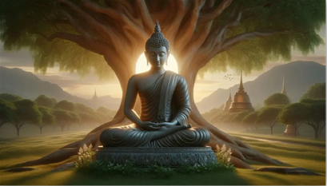
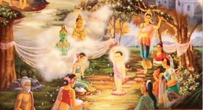
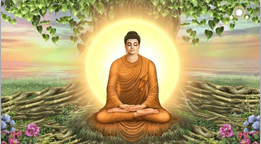
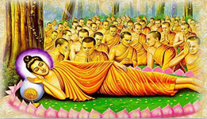

วิสาขบูชา
วันวิสาขบูชาเป็นวันที่สำคัญอย่างยิ่งในศาสนาพุทธ เนื่องจากเป็นวันที่ระลึกถึงเหตุการณ์สำคัญสามประการในชีวิตของพระพุทธเจ้า ได้แก่ การประสูติ, ตรัสรู้, และปรินิพพาน วันวิสาขบูชามีความสำคัญมากมายดังนี้
การประสูติของพระพุทธเจ้า
พระพุทธเจ้า หรือเจ้าชายสิทธัตถะประสูติในวันที่เพ็ญเดือน 6 ปีพุทธศักราช 80 ก่อนคริสต์ศักราช ณ สวนลุมพินีวันซึ่งตั้งอยู่ระหว่างกรุงกบิลพัสดุ์และกรุงเทวทหะ เจ้าชายสิทธัตถะเป็นพระราชโอรสของพระเจ้าสุทโธทนะและพระนางสิริมหามายา เจ้าชายสิทธัตถะได้รับการศึกษาที่ดีและได้รับการอบรมให้เป็นกษัตริย์ในอนาคต แต่พระองค์มีความสนใจในเรื่องความทุกข์ของมนุษย์และต้องการหาทางออกจากความทุกข์เหล่านี้

การตรัสรู้ของพระพุทธเจ้า
หลังจากที่เจ้าชายสิทธัตถะออกบวชและศึกษาวิถีปฏิบัติจากอาจารย์หลายท่าน พระองค์ก็พบว่าการปฏิบัติทั้งหลายไม่ได้นำมาซึ่งความรู้ที่แท้จริง พระองค์จึงตัดสินใจนั่งสมาธิใต้ต้นโพธิ์ที่พุทธคยา และในที่สุดก็ตรัสรู้ในคืนวันที่เพ็ญเดือน 6 พระพุทธเจ้าได้ค้นพบอริยสัจ 4 และทางสายกลาง (มัชฌิมาปฏิปทา) ที่นำไปสู่การพ้นทุกข์
การปรินิพพานของพระพุทธเจ้า
พระพุทธเจ้าได้เสด็จดับขันธ์ปรินิพพานในคืนวันที่เพ็ญเดือน 6 เช่นเดียวกันที่เมืองกุสินารา พระองค์เสด็จเข้าสู่ปรินิพพานในสภาพของการหลุดพ้นจากความทุกข์ทั้งปวง และเป็นการยืนยันถึงคำสอนของพระองค์ว่า ทุกสรรพสิ่งเป็นอนิจจังและทุกขัง
การปฏิบัติและกิจกรรมในวันวิสาขบูชา
การทำบุญตักบาตร
ในวันวิสาขบูชา พุทธศาสนิกชนจะตื่นเช้าไปวัดเพื่อทำบุญตักบาตร การทำบุญตักบาตรนี้เป็นการแสดงความเคารพต่อพระพุทธเจ้า และเป็นการสร้างความเป็นมงคลแก่ตนเองและครอบครัว
การเวียนเทียน
กิจกรรมที่สำคัญอีกประการหนึ่งในวันวิสาขบูชาคือการเวียนเทียน ในตอนค่ำ พุทธศาสนิกชนจะนำดอกไม้ ธูปเทียน เดินเวียนรอบพระอุโบสถหรือพระเจดีย์สามรอบ การเวียนเทียนเป็นการแสดงถึงความเคารพและการระลึกถึงพระพุทธเจ้า พระธรรม และพระสงฆ์
การฟังธรรมเทศนา
การฟังธรรมเทศนาเป็นการเรียนรู้และย้ำเตือนถึงคำสอนของพระพุทธเจ้า พระสงฆ์จะกล่าวธรรมเทศนาเกี่ยวกับการประสูติ ตรัสรู้ และปรินิพพานของพระพุทธเจ้า เพื่อให้พุทธศาสนิกชนได้น้อมนำหลักธรรมไปปฏิบัติในชีวิตประจำวัน
ความสำคัญในระดับสากล
วันวิสาขบูชาไม่เพียงแต่มีความสำคัญในประเทศไทยเท่านั้น แต่ยังได้รับการยอมรับในระดับสากล ในปี พ.ศ. 2542 องค์การสหประชาชาติได้ประกาศให้วันวิสาขบูชาเป็นวันสำคัญสากลของโลก เนื่องจากพระพุทธศาสนาเป็นศาสนาที่มีผู้ติดตามทั่วโลกและมีผลกระทบที่ยิ่งใหญ่ต่อวัฒนธรรมและสังคมของหลายประเทศ
การส่งเสริมความสามัคคีและสันติสุข
วันวิสาขบูชายังเป็นโอกาสที่ดีในการส่งเสริมความสามัคคีในสังคม พุทธศาสนิกชนสามารถมารวมตัวกันทำบุญ ทำกิจกรรมร่วมกัน และร่วมกันฟังธรรมเทศนา ซึ่งช่วยเสริมสร้างความเป็นหนึ่งเดียวในสังคม นอกจากนี้ คำสอนของพระพุทธเจ้าเกี่ยวกับการไม่ทำร้ายและการมีเมตตากรุณายังสามารถนำมาใช้เป็นแนวทางในการสร้างสันติสุขในสังคมและในระดับโลก
บทสรุป
วันวิสาขบูชาเป็นวันที่สำคัญอย่างยิ่งในศาสนาพุทธ เนื่องจากเป็นวันที่ระลึกถึงการประสูติ ตรัสรู้ และปรินิพพานของพระพุทธเจ้า พุทธศาสนิกชนทั่วโลกต่างร่วมกันทำบุญ ฟังธรรม และเวียนเทียนเพื่อระลึกถึงพระพุทธเจ้าและคำสอนของพระองค์ วันวิสาขบูชานี้ยังมีความสำคัญในระดับสากล และเป็นโอกาสที่ดีในการส่งเสริมความสามัคคีและสันติสุขในสังคม